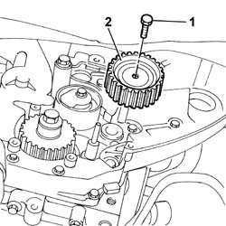
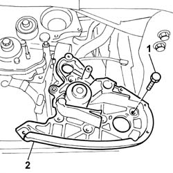
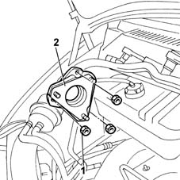
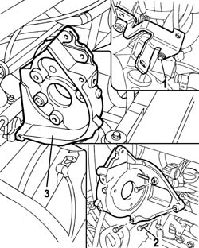

1060E40 SUPPLEMENTARY PRESSURE PUMP - R R
- Path
- Procedures > 10 ENGINE UNIT > 1060 DIESEL INJECTION SYSTEM > 1060E DIESEL PRESSURE PUMP > 1060E40 SUPPLEMENTARY PRESSURE PUMP - R R
- Kind
- repair procedure (removal / refitting; the operation number is the code)
- Applies to
- engines: 2.0 JTD 8V, 2.3 JTD 16V, 2.8 JTD 8V; all production periods
- Interactive page
- https://sloeber94.github.io/elrnDB-fDct/en/#/244000833
Applies to: engines: 2.3 JTD 16V; all production periods
 Removing
Removing
 Refitting
RefittingOp. 7055B54 UNDER-ENGINE GUARD - R R
Op. 4450B04 RIGHT FRONT WHEEL R R
Op. 1092B72 POWER STEERING PUMP DRIVE BELT - ALTERNATOR - R&R
See in Op. 1092A10
See in Op. 1032D12
See in Op. 1032B10
See in Op. 1060E30
See in Op. 1060E10
1. Undo the fixing bolt.
2. Remove the timing belt fixed tensioner.

Applies to: engines: 2.3 JTD 16V; all production periods
- Have a suitable container for collecting the engine coolant ready.
- Disconnect the lower hose from the radiator and drain the engine cooling system.
- Collect the coolant that comes out in the container.
1. Undo the bolts fixing the support to the cylinder block/crankcase.
2. Remove the support for the pressure pump complete with water pump.

Applies to: engines: 2.3 JTD 16V; all production periods
Refitting
Removing- Check the condition of the O-Ring circlip; if it is no longer intact, replace it.
- Fit the support for the pressure pump complete with water pump.
- Tighten the bolts fixing the support to the cylinder block/crankcase to torque.
 | Value - daNm | Fastening | Component | Ø |
|---|---|---|---|---|
. | 1 | Bolt | INJECTION PRESSURE PUMP MOUNT | M6 |
| Value - daNm | Fastening | Component | Ø |
|---|---|---|---|---|
. | 2.5 | Bolt | INJECTION PRESSURE PUMP MOUNT | M8 |
- Connect the lower hose to the radiator.
- Fit the various components drive belt fixed tensioner.
- Tighten the bolts fixing the fixed tensioner to torque.
See in Op. 1060E10
See in Op. 1060E30
See in Op. 1032B10
See in Op. 1032D12
See in Op. 1092A10
Op. 1092B72 POWER STEERING PUMP DRIVE BELT - ALTERNATOR - R&R
Op. 4450B04 RIGHT FRONT WHEEL R R
Op. 0010T20 COOLANT CHECK DENSITY AND TOP UP IF NECESSARY
Op. 0010T21 COOLANT CHECK DENSITY AND TOP UP IF NECESSARY
Op. 0010T11 ENGINE OIL CHECK LEVEL AND TOP UP
Op. 7055B54 UNDER-ENGINE GUARD - R R
- Remove the vehicle from the lift.
Applies to: engines: 2.8 JTD 8V; all production periods
Removing
RefittingSee in Op. 1048B14
See in Op. 1048B22
See in Op. 1060F20
See in Op. 1060E10
1. Undo the fixing nuts.
2. Remove the pressure pump support.

Applies to: engines: 2.8 JTD 8V; all production periods
Refitting
Removing- Place the pressure pump support in position.
- Tighten the fixing nuts to the recommended torque.
See in Op. 1060E10
See in Op. 1060F20
See in Op. 1048B22
See in Op. 1048B14
Applies to: engines: 2.0 JTD 8V; all production periods
Removing
Refitting- Position the vehicle on the lift.
Op. 7055B54 UNDER-ENGINE GUARD - R R
Op. 4450B04 RIGHT FRONT WHEEL R R
Op. 1092G10 SINGLE ENGINE BELT R R
See in Op. 1092A10
See in Op. 1032D12
See in Op. 1032B10
See in Op. 1060E30
See in Op. 1060E10
1. Undo the bolt fixing the bracket to the mounting.
- Loosen the remaining bracket bolts to faciliate the subsequent operation of removing the mounting.
2. Undo the bolts securing the mount to the cylinder block/crankcase.
3. Remove the pressure pump support.

Applies to: engines: 2.0 JTD 8V; all production periods
Refitting
Removing- Fit the pressure pump support.
- Tighten the bolts securing the mount to the cylinder block/crankcase to the recommended torque.
| Value - daNm | Fastening | Component | Ø |
|---|---|---|---|---|
. | 2 | Bolt | INJECTION PRESSURE PUMP MOUNT | - |
- Tighten the bolts fixing the bracket.
See in Op. 1060E10
See in Op. 1060E30
See in Op. 1032B10
See in Op. 1032D12
See in Op. 1092A10
Op. 1092G10 SINGLE ENGINE BELT R R
Op. 4450B04 RIGHT FRONT WHEEL R R
Op. 7055B54 UNDER-ENGINE GUARD - R R
- Remove the vehicle from the lift.
Topics linked from this page (7)
- 0010T11 ENGINE OIL CHECK LEVEL AND TOP UP
- 0010T20 COOLANT CHECK DENSITY AND TOP UP IF NECESSARY
- 0010T21 COOLANT CHECK DENSITY AND TOP UP IF NECESSARY
- 1092B72 POWER STEERING PUMP DRIVE BELT - ALTERNATOR - R&R
- 1092G10 SINGLE ENGINE BELT R R
- 4450B04 RIGHT FRONT WHEEL R R
- 7055B54 UNDER-ENGINE GUARD - R R